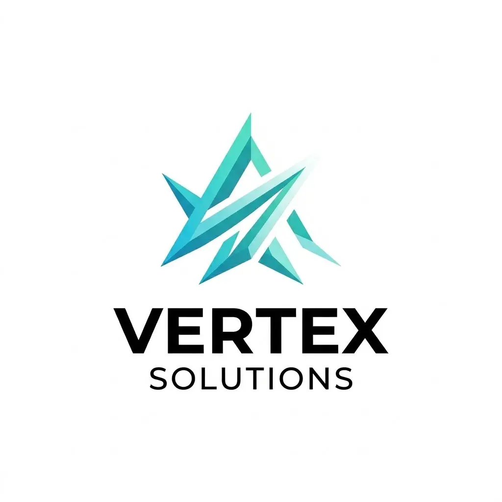
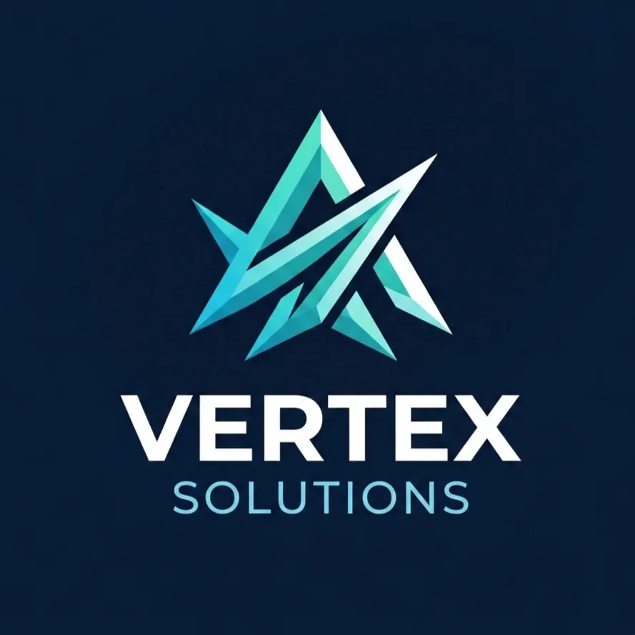
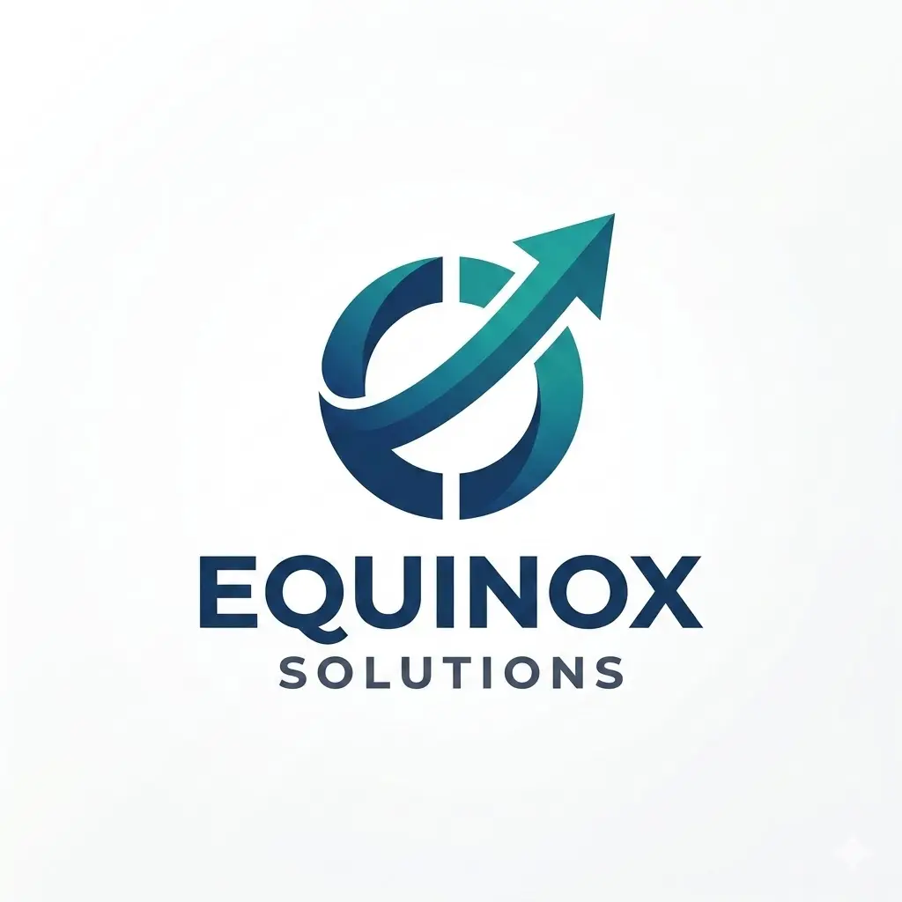
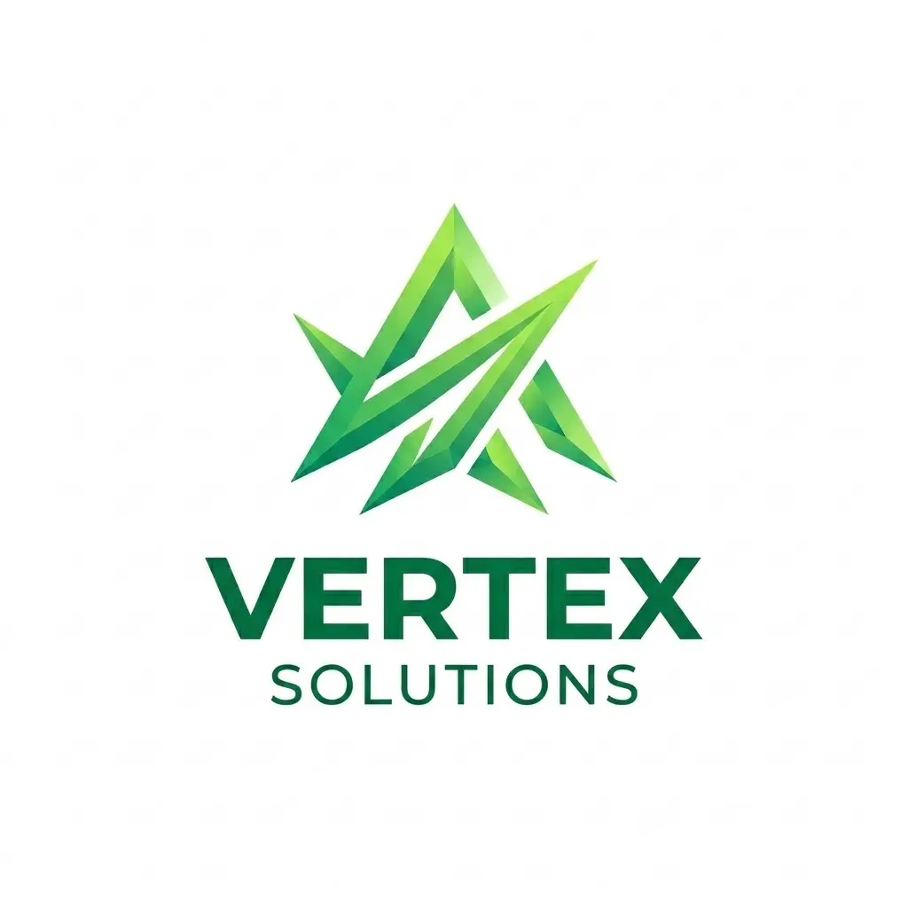
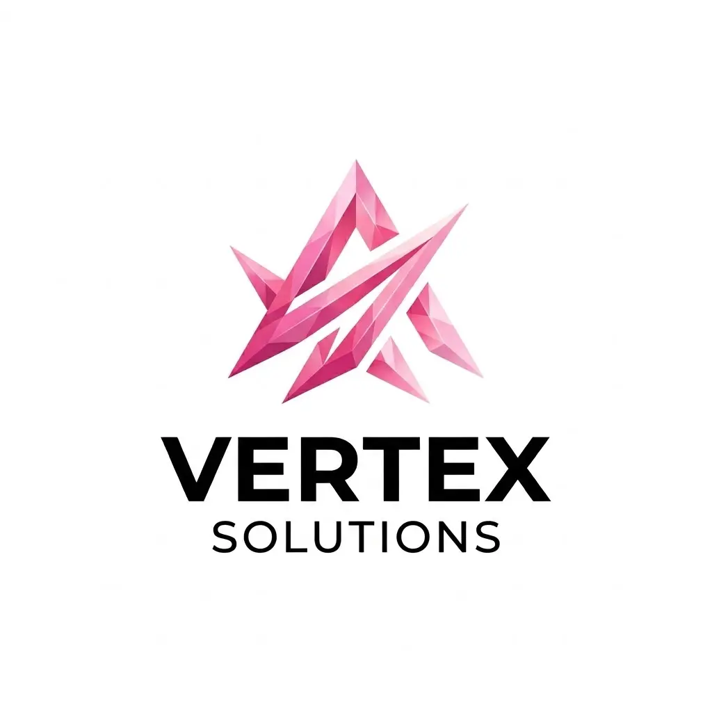

Tentang Kami
Kami adalah klinik kesehatan yang berkomitmen memberikan pelayanan medis yang aman, nyaman, dan terpercaya. Didukung tenaga medis berpengalaman serta fasilitas modern, kami hadir untuk membantu Anda dan keluarga mendapatkan perawatan terbaik—mulai dari konsultasi hingga tindak lanjut pemulihan.
Pelayanan Kesehatan Terpercaya untuk Keluarga Anda
Kami percaya bahwa perawatan medis yang baik dimulai dari memahami kebutuhan pasien. Tim medis kami memadukan teknologi modern dengan pelayanan yang hangat dan personal agar setiap pasien mendapatkan penanganan terbaik, aman, dan nyaman.


Penyedia Layanan Kesehatan yang Dipercaya
Kami berkomitmen memberikan layanan yang konsisten, transparan, dan berorientasi pada hasil. Mulai dari pemeriksaan awal hingga tindak lanjut, kami memastikan setiap langkah perawatan jelas dan sesuai kebutuhan pasien.
Perawatan Berhasil
Ditangani dengan hasil yang baik dan terukur
Kepuasan Pasien
Berdasarkan survei dan masukan layanan
Tenaga Medis
Dokter dan tenaga profesional lintas layanan
Misi Kami
Memberikan layanan kesehatan yang menyeluruh dan berpusat pada pasien, memadukan keunggulan medis dengan kepedulian yang nyata, serta menghadirkan perawatan yang sesuai kebutuhan setiap individu.
Visi Kami
Menjadi pilihan utama layanan kesehatan di wilayah kami melalui inovasi, kualitas pelayanan yang konsisten, dan komitmen untuk meningkatkan kualitas hidup masyarakat.
Komitmen Kami
Setiap pasien mendapatkan perawatan berkualitas dalam lingkungan yang nyaman dan suportif, dengan mengutamakan kesehatan, privasi, serta martabat pasien di setiap proses.
Keunggulan Layanan
Berbagai layanan unggulan kami saling terintegrasi untuk memberikan perawatan yang lengkap dan berkesinambungan
Pengakuan & Standar Mutu
Komitmen kami terhadap kualitas tercermin dari standar layanan dan penerapan prosedur yang konsisten




